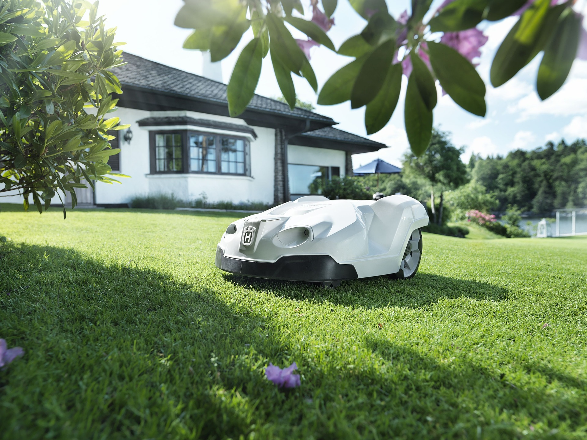

<ion-header>
  <ion-toolbar>
    <ion-title>GreenMarket</ion-title>
  </ion-toolbar>
</ion-header>

<ion-content>
  <ion-card>
    
    <ion-card-header>
      <ion-card-title>Bienvenue sur GreenMarket</ion-card-title>
    </ion-card-header>
    <ion-card-content>
      Découvrez notre sélection de produits éco-responsables : bio, recyclés, et naturels.
    </ion-card-content>
  </ion-card>

  <ion-list>
    <ion-item *ngFor="let produit of produits">
      <ion-thumbnail slot="start">
        
      </ion-thumbnail>
      <ion-label>
        <h2>{{ produit.nom }}</h2>
        <p>{{ produit.prix }}€</p>
      </ion-label>
      
    </ion-item>
  </ion-list>
</ion-content>
